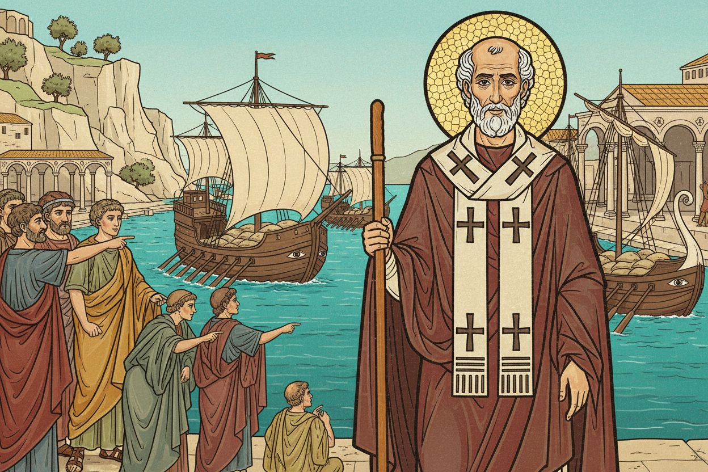
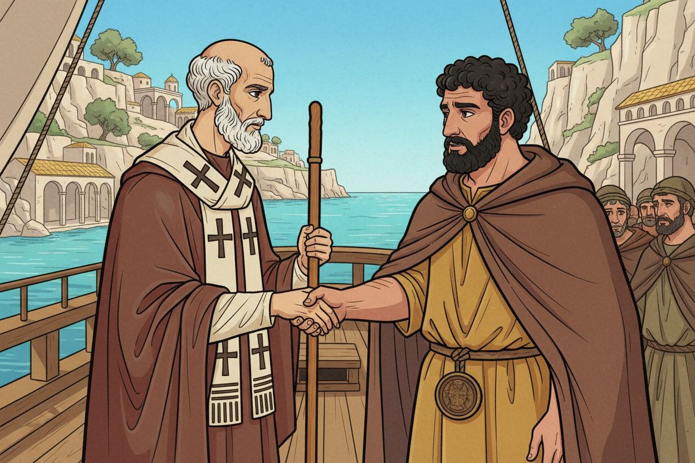
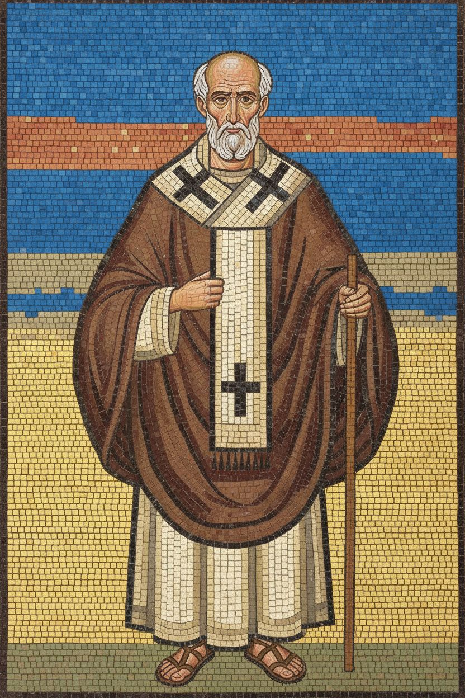

1. Plachty!
nenamalováno


2. Slib
nenamalováno


Postavy v novém stylu



Styl
style: >- Late-Roman Christian wall mosaic in the manner of the apse mosaic of Santa Pudenziana in Rome (about 410 AD), made of small glass and stone tesserae with a soft glitter of gold and ochre. Warm, natural, individual faces with calm dark eyes and gentle expressions, not stiff or frontal; people in long Roman tunics and draped mantles (pallium) with clear heavy folds, gentle storytelling gestures. Buildings as Roman arcades and colonnades with golden roof tiles. Bold dark outlines around every shape and flat areas of colour with little shading, so the picture also works as coloring-book line art. Matte, not a 3D render, not glossy. mood: calm, warm, human, reverent, sunny, timeless palette: - '#C9A23F' - '#C98A4B' - '#7A8A4A' - '#5F7690' - '#8E3B2E' - '#F2EAD3' - '#2B211B' negative: >- No text, no letters, no words, no watermark. No Gothic architecture, no snow, no halos unless stated. aspect_ratio: '3:2'